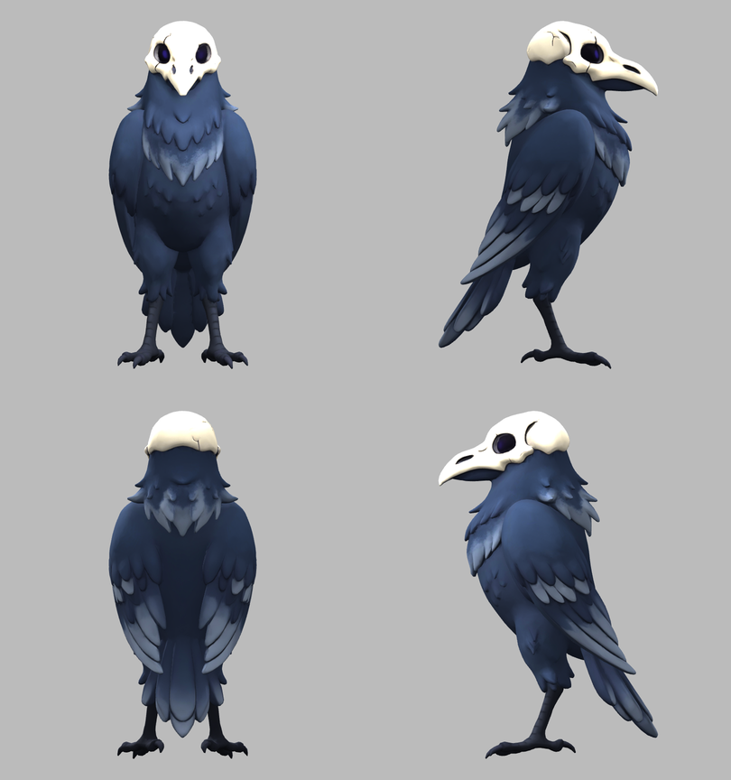

Your export of the third Level III boss, with a bird's skeleton and 12 moves added by hand. The model came with its wings folded and fused to its back, so I cut each wing free and gave it fourteen flight feathers that fan out as it opens. The lower beak is cut free so it can gape and caw, the hackles on its nape stand up, and the tail swings on a spring. Its timings are the game's. Pick a move, drag to turn it, and judge the weight and the hit. Nothing in the game has changed.
Idle or Walk sets what it does between attacks, and Going turns it on the spot. An Action plays over it and repeats until you press it again. Hurt plays on top of anything. Death holds it down: press it again and it spawns back in. The bar names the part of the move that is playing, in the game's own words. Enraged is its state under 40 percent health: the hackles stay up, the eyes and throat burn and it hops faster, and it stays on over every move until you switch it off. The camera lifts a little while it flies.

It came through whole and in one welded piece: the cracked bone mask with both violet eyes, the ruff of hackles, the breast plumes, the folded wings, the tail and two legs with four talons each. The beak points straight ahead (0.5 degrees off), so nothing was corrected. The wings lie folded along the back and are one skin with the body, and the lower beak was fused to the upper.
| Move | What it does | Timing |
|---|---|---|
| Idle | A raven is never quite still. It breathes, snaps its head to look left and then right with a cock of the head, ruffles once so the hackles lift and the wings shrug, clacks its beak twice and flicks its tail. | 6 s loop |
| Walk | It hops, as the game's Raven does: both feet leave the floor together and land together, the right a frame after the left. It sinks and tips forward, kicks off its toes, the wings flick out from its sides in the air and the tail lifts, and it lands on bent legs. The head stays level. | Game: 1.35 u/s, 1.7 u/s enraged. One hop of 0.57 u every 0.42 s. |
| Turn left, turn right | Hops round on the spot, 45 degrees a hop, the head leading. | Mine: 107 degrees a second. The game gives the Raven no turn rate. |
| Carrion Dive | It crouches with the wings thrown up and one downbeat takes it off the floor. Two more carry it up to 1.5 u, where it hangs with its talons tucked and looks down the lane, beak open. It tips over and stoops with the wings swept back, comes down to a skim 0.45 u over the floor and tears down the lane with its legs trailed, leaving a furrow of ash and feathers. At the end it throws its talons forward and its wings up to brake, the left foot down a frame before the right. Then it turns its head into its left wing and runs its beak down the long feathers: the punish window. A shake, and it settles. | Game: Ember lane 1.2 u wide and up to 9 u long for 50 ticks. It hangs at 1.5 u, stoops in 2.5 frames, dives in the last 14 ticks at 0.45 u to the lane's end less its 0.8 u radius, lands in 2.5 frames, held 3 frames, preens until 40 ticks after the hit, settles in 0.6 s. Here the lane is the full 9 u and the hero stands 5 u away. |
| Wing Gust | It crouches with its head low and the hackles up, the wings drawn up and back with their faces turned at the hero. On the beat it throws both wings wide and forward, cupped, rocking back on its legs, and the hero is blown away. | Game: Ember cone 3.4 u long, 60 degrees either side, for 40 ticks; beat 2.5 frames, held 3 frames, settle 0.55 s. Each body in it is blown 2.6 u over 10 ticks. It only gusts with a hero within 2.8 u. |
| Omen | It draws itself up and raises its wings wide and high, and its head follows the mark as the mark follows the hero. When the mark locks, the head stills and tips back, the beak opens and the throat burns. On the caw the head is thrown up, the beak snaps wide and the crows come down out of the sky into the ring. | Game: Ember ring of radius 1.4 u on the hero for 84 ticks. It follows at 2.4 u/s for the first 54, is locked for the last 30, and the crows come down in the last 14. Caw 2.5 frames, held 3 frames, settle 0.6 s. Enraged, the ring leaves ash (radius 1.3 u, 4 s, 30 percent slow). |
| Enrage | It hunches with the head low and the hackles up, the wings shrugged off its sides, then thrusts the head forward and screams with the wings flared and shaking. The Enraged state stays on after it. | Mine: 1.5 s. The game has no pose at 40 percent health: the hackles stay up, the eyes and throat burn, and it moves faster. |
| Hurt | The head is knocked back and aside, the hackles flare and the beak gapes. Plays on top of any move. | 0.42 s |
| Heavy hit | Thrown back 0.3 u: the head whips, the wings fly open to catch it, it hops back on both feet, shakes itself and squares up. | 1.1 s |
| Spawn | It grows out of the floor in a low crouch, comes up with its wings half open, shakes the ash off and caws once. | Game: grow in 7 frames, then stand. The rise, the shake and the caw are mine. |
| Death | Knocked upright with the wings flying open and the beak wide on a cry that does not come, its legs give, the right and then the left, and it comes down on its breast with the wings falling open across the floor. The head sways and sinks, and the beak lies down last, turned to one side. The eyes go dark. | 2.6 s, then it stays down |
A checker takes every point of the model (18,120 of them) through every frame of every move (1,236 frames) and looks for five things. Sizes are in u; it is 2.4 u tall.
| Checked | Found in the first build | Now |
|---|---|---|
| A joint that jumps in one frame (a pop) | At the dive's landing the tail jumped 46 degrees in one frame and the left foot 34 degrees as the legs swung down to land. | The legs come down over five frames now and the foot does not pop. What is left is the tail and the inner flight feathers turning up to 24 degrees in the frame the wings are thrown up to brake, inside the game's 2.5-frame landing. |
| Any part under the floor | The left foot swung 0.17 u under the floor on its way to land after the dive, and the tail went 0.08 u under in the Omen's caw. | Only the tips of the talons as they push off: 0.02 u at the dive's take-off and 0.01 u in each hop. |
| One part pushed through another | With the talons tucked in flight the feet sat 0.14 u inside the belly and thighs. The raised wings pressed 0.11 u into the mask in the Wing Gust and the Omen. The tail passed 0.05 u through the legs in each hop. | The tucked feet hang clear of the belly, and the wings are raised less high. Still there: a raised wing's leading edge touches the side of the mask in the Gust, the Omen and the Enrage (up to 0.09 u, a handful of points); the beak goes 0.08 u into the wing it preens, on purpose; the nape feathers fold into the back of the mask by up to 0.12 u when the head is thrown back or lies on the floor; the tail brushes the legs in each hop (0.04 u); the feathered thighs press together while the legs are tucked. |
| Skin torn or pulled (a seam that opens) | Points that sit on top of each other at a seam had different weights and pulled apart: up to 0.24 u across the belly as it lay dead, 0.13 u on the back under the wings in the Heavy hit, and 0.06 u at the rim of the mask in the idle. | Seams share their weights now, the skin under each wing follows the body, and the belly stays with the hips. The worst stretch left is 0.13 u at the throat when the head lies turned on the floor, which reads as the neck stretching. |
| Smoothness (a move that stops dead, a loop that jumps) | The hop loop jumped 1.6 degrees where it restarts. | Under 1.5 degrees in the hop and under 0.7 degrees in the turns, from the springs in the tail and hackles. The idle loops cleanly. |
| What was measured, on every frame of every move | Result |
|---|---|
| A planted foot moving on the floor (locked feet) | 0 mm in every move, the hop, the turns and the dive's landing included |
| A planted foot its leg could not reach | 0 mm |
| Loops that jump when they restart (idle, hop, both turns) | Idle 0. Hop 1.5 degrees, turns 0.6 and 0.7 degrees, all from the springs in the tail and hackles. |
| Head facing straight | Straight on the model: the beak tip is 0.5 degrees off the middle line and the eyes mirror each other, so nothing was corrected. |
| Hackles and tail | Run as springs: they trail the body and settle after it stops. |
| Walk and turn | Feet and knees point straight ahead, no splay. Both feet leave and land together. |
| Flight | One downbeat takes it off the floor, it hangs at 1.5 u, and it comes down on a braking beat with one foot landing a frame before the other. |
These numbers come from the model file. I checked the poses as still frames only: the cloud machine cannot play the page at full speed, so the weight, the timing and the hit are yours to judge.